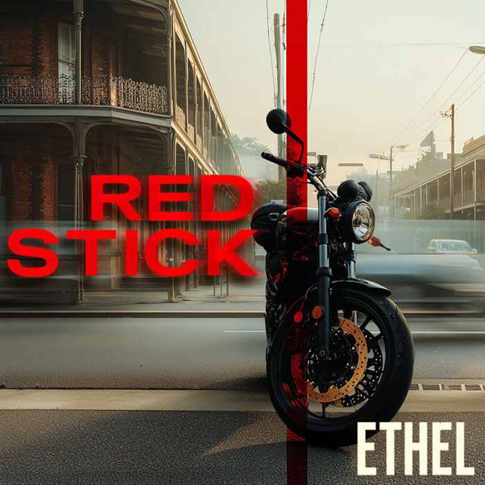

FILE_ID31
TIMESTAMPJUN 2024 (FIRST TEST)
SUBJECTEthel
Red Stick
Reaction measured · signal answered
Decoded Story
It begins with a test. Subtle. Deliberate. Seemingly harmless.
A red stick wedged in the front wheel of her bike. Nothing dramatic, nothing random. A message to measure reaction.
The song follows Ethel as she reads it the way others read handwriting.
Audio Transcript — Lyrics
[START_TRANSCRIPT]
There are things you learn
When life stops pulling punches
And starts aiming for the gut.
That you can’t get from a book,
Or a podcast,
Or hearing it second-hand
From someone who tells you they’ve made peace with it.
It doesn’t always land the first time, either.
Some people go through it
And come out thinking it was just hard.
But some of us
Note the shapes
That burn around the edges.
You learn what matters
After the noise drops out.
How you move.
How you’re read.
How you’re misread.
How quickly some people
Will decide what your silence means,
When they’ve never seen too many possibilities think.
An then... some of us
We start to realize
That the things we were told were weaknesses
Were never soft.
They just didn’t translate well.
It’s not about toughness.
It’s about precision.
About knowing the cause,
The action,
The impact,
And who cops it.
Because I’ve felt the hit.
Not in the abstract.
Not in metaphor.
But in the way that leaves you
With a second sense
For tension,
For tells in posture,
For methods.
So when I walked outside that morning,
Slid on the gloves,
Checked the brakes,
And saw the red stick
Slotted straight,
Dead center
Between front wheel and frame,
Smooth.
Unsplintered.
Dry.
I didn’t pause.
I did the math in silence.
That stick wasn’t kicked up.
Wasn’t dropped.
It was placed.
Vertical.
Dead straight.
Zero bounce.
It wasn’t random.
It wasn’t angry.
It was someone testing
How long I take to react.
How fast my eyes track anomalies.
Whether I ride anyway.
Whether I rage.
Whether I report.
Or whether I keep moving
Like nothing happened.
So I did none of those.
I picked it up,
Put it in my pack,
And left the bike where it was.
No statement.
No sudden turn.
Across the street
A park.
Half a red tail caught in a branch.
Too low to be missed,
Too high for a kid to reach.
I scanned.
Behind me, shops.
To the right, a pub,
Breakfast menu chalked up out front.
Second floor balcony.
Beyond the park,
Just units.
Private. Forgettable.
The pub?
That’s the vantage.
I crossed,
Grabbed the kite,
It came easy.
Back to the bike.
Pack open.
Kite in.
Engine kick off.
I pulled up fast,
Park it quickly.
Through the door,
Up the stairs,
Onto the balcony.
Still-warm coffee.
Uneaten croissant.
Napkin scribbled on.
Chair still observing.
Then I see him.
Blue sweater.
Jeans.
Grey hair, thin build.
Crossing the street below.
Glance up.
We see each other.
Then he’s walking,
Not rushing,
But not slow,
Toward the only street
You might find a park
On a weekday before noon.
I go the long way.
Round the block.
I’m faster.
I run.
Just as I round the bend,
I see the grey sedan.
Driver-side door closing.
Engine low.
Gone before I get there.
But up at the curb?
A business card.
Face down.
Fluttering.
Not placed.
Dropped.
Like an accident
In peak hour.
Councilor Ross Kinley.
No Facebook....
But this friend of his has one.
And his friend
Is too proud.
Tagline-proud.
Name-drop proud.
Smile-next-to-the-mayor proud.
Same beard.
Same sweater.
Dumb-smart.
Where the latter
Hasn’t yet met the former.
But I’ll introduce them.
Companion Pieces
Figures Clipboard Man · Councillor Ross Kinley
In the cycle Guilt Money · Ants on the Vine · Clipboard Man · Can You Make a Mistake on Purpose? · Rattled
Ethel ethelryker.com · on veX